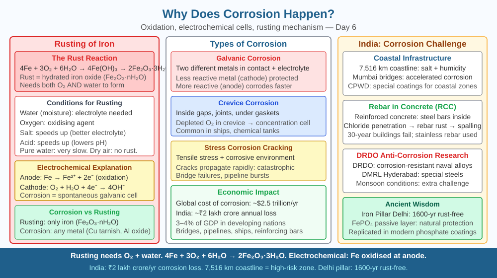

By the end of this lesson, you should be able to write the chemical equation for iron rusting, explain the electrochemical steps that turn Fe into Fe³⁺ oxide, identify the roles of oxygen and water, and predict what happens to rusting if oxygen is completely removed.
The Howrah Bridge in Kolkata is made of steel and has stood over the Hooghly River since 1943. But every few years, engineers repaint it — roughly 26,000 litres of paint each time — precisely to stop it from destroying itself. Leave any iron object outdoors in a monsoon and within days it shows a familiar reddish-brown crust. Yet the aluminium body of a pressure cooker or the chrome taps in your bathroom do not rust at all. Iron rusts, aluminium and chromium do not. Why? What happens at the surface of iron that does not happen at the surface of these other metals?
Rusting is not a single-step reaction. It is an electrochemical process — a set of coupled oxidation and reduction reactions that requires three ingredients: iron, oxygen, and water. Remove any one and the process stalls.
Step 1 — Oxidation of iron at the anode. At certain spots on the iron surface, iron atoms lose electrons and become iron(II) ions:
Fe → Fe²⁺ + 2e⁻
This is an oxidation reaction (loss of electrons). The spots where this happens act as tiny anodes in an electrochemical cell.
Step 2 — Reduction of oxygen at the cathode. The electrons released at the anode travel through the iron to other spots on the surface, where dissolved oxygen in the water film picks them up:
O₂ + 2H₂O + 4e⁻ → 4OH⁻
These spots act as tiny cathodes. Water is essential here because oxygen must dissolve into a thin film of water to gain access to the electrons. Without liquid water, this step cannot occur.
Step 3 — Formation of rust. The Fe²⁺ ions and OH⁻ ions migrate through the water film and meet:
Fe²⁺ + 2OH⁻ → Fe(OH)₂ (iron(II) hydroxide)
Iron(II) hydroxide is then further oxidised by more dissolved oxygen to iron(III) hydroxide, and this dehydrates to give iron(III) oxide — the familiar reddish-brown rust:
4Fe(OH)₂ + O₂ → 2Fe₂O₃·H₂O (hydrated iron(III) oxide / rust)
The overall result is: Iron + Oxygen + Water → Iron(III) Oxide (rust).
Why does water act as an electrolyte? Rainwater and seawater contain dissolved salts and CO₂ (forming carbonic acid), which makes them slightly acidic and more conductive. This accelerates ion movement between anodic and cathodic sites, which is why iron corrodes far faster near the coast or in polluted urban air than in dry interiors.
Why does the reactivity series matter? Metals higher in the reactivity series (like zinc, magnesium) have a stronger tendency to lose electrons and oxidise. Iron sits in the middle — it corrodes, but more slowly than zinc. Aluminium is above iron in the reactivity series, yet aluminium objects don't corrode visibly. Why? Aluminium instantly forms a very thin, hard layer of aluminium oxide (Al₂O₃) on its surface. This oxide layer is impermeable — it seals off the metal beneath from further contact with oxygen and water. The corrosion stops after that first microscopic layer forms. Iron(III) oxide (rust), by contrast, is porous and flaky — it does not seal the surface. Rust flakes off, exposing fresh iron, which then corrodes again. This is why rust is self-perpetuating while aluminium corrosion is self-limiting.
Stainless steel (used in Indian kitchen utensils) resists corrosion because it contains 10–30% chromium. Chromium forms a thin, adherent Cr₂O₃ passivation layer — similar to aluminium — that stops oxygen and water from reaching the iron atoms beneath.
Think of the rusting iron surface as a miniature battery with thousands of tiny cells operating simultaneously:
The overall result is the conversion of solid iron into crumbly iron(III) oxide. Remove the electrolyte (keep it bone dry) and the ion circuit breaks — corrosion halts. Remove oxygen and the cathodic reaction has no reactant — electrons cannot be passed on and the anodic oxidation stops too.
The included SVG shows the iron surface cross-section with:

In a science experiment, four identical iron nails are placed in four test tubes:
Rank these nails from fastest to slowest corrosion after one week. Use the electrochemical mechanism — anode reaction, cathode reaction, electrolyte conductivity — to justify each ranking. Then predict: what would happen if you added a piece of zinc metal touching the nail in Tube A? Would the nail rust faster, slower, or not at all? Explain using the reactivity series.
What causes iron to corrode (rust) when exposed to air and moisture?
Correct answer: b
Why is understanding the oxidation mechanism of corrosion more useful than noting it happens?
Correct answer: b
What would happen to iron corrosion if oxygen were completely removed from the environment?
Correct answer: c
Explain today's concept to a younger student in 60 seconds without technical jargon. Then explain it again using the correct scientific vocabulary.
If both explanations describe the same mechanism, you have understood the concept rather than memorised it.
Rust is a far worse structural material than iron: it is porous, brittle, and about six to seven times the volume of the iron it replaces. This expansion is why brick walls crack when embedded iron reinforcement rods corrode — the expanding rust pushes the concrete apart from the inside. Engineers call this "concrete cancer." In cities like Mumbai, the combination of humidity, salt air, and carbonation of concrete makes this one of the most expensive maintenance problems in urban infrastructure — all because Fe²⁺ keeps losing electrons to dissolved oxygen.
Iron rusts because it undergoes an electrochemical reaction: iron atoms at anode spots lose electrons to form Fe²⁺, dissolved oxygen at cathode spots gains those electrons to form OH⁻, and these ions combine in the water film to produce hydrated iron(III) oxide — a process that stops immediately if either oxygen or water is removed.